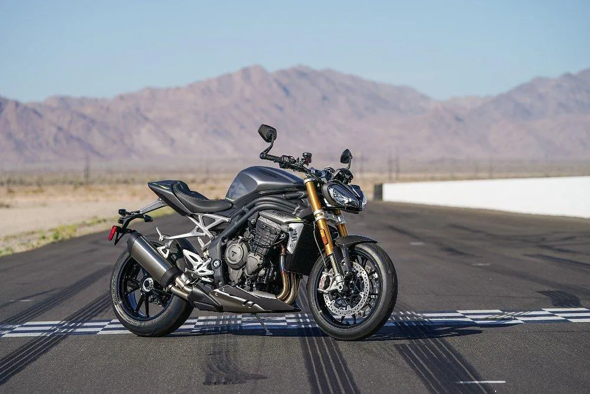
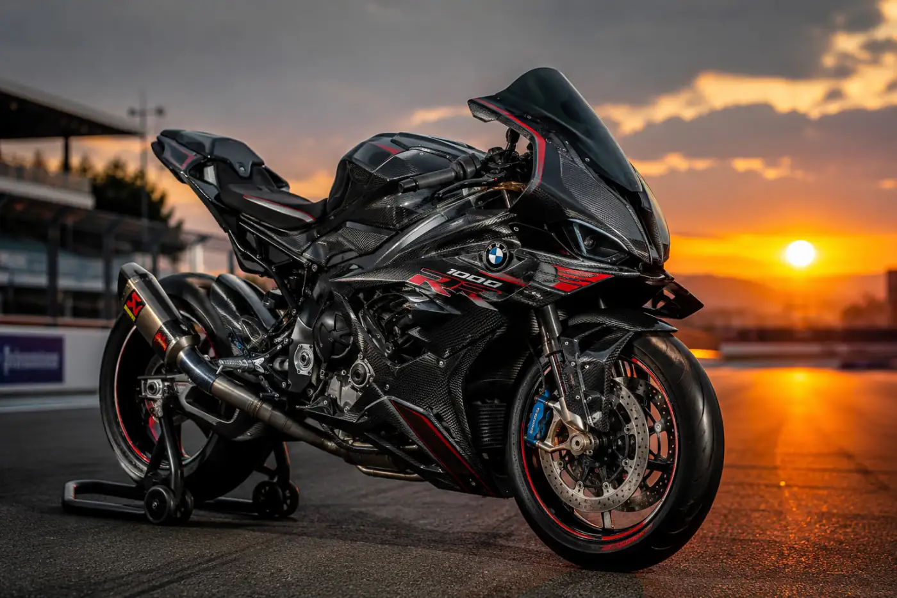
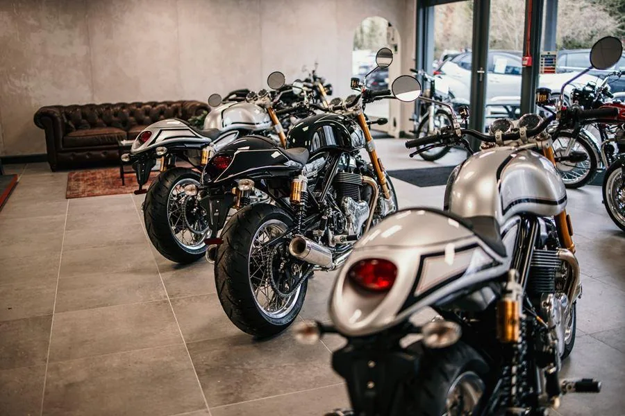

7 Checks Before Buying
A practical inspection sequence for tyres, brakes, chain, engine, chassis and paperwork.
Practical used-bike knowledge on inspection, valuation, paperwork, maintenance, ownership costs and smarter marketplace decisions.
Start with documents, then move to condition, test ride and final price.

A polished bike can still need expensive work. Check cold start, leaks, tyres, brakes, chain, suspension, records and documents before negotiating.
Read Full GuideA practical inspection sequence for tyres, brakes, chain, engine, chassis and paperwork.
What clutch feel, braking, steering and suspension can tell you about condition.
Look beyond price and compare upcoming maintenance, documents and ownership history.
Use age, mileage, condition, service records and market demand to set a realistic ask.
Angles, lighting and detail shots that help buyers understand the motorcycle properly.
Know your minimum price and support your asking price with actual condition and records.
Understand the ownership-transfer journey after a used-bike sale.
What buyers should check about policy validity and ownership updates.
Why unresolved finance can block a clean ownership transfer.
Budget for oil, filters, tyres, brake pads, chain, battery and scheduled service. A cheap bike may need money immediately.
Explore Maintenance Guides
Smooth acceleration, correct tyre pressure and regular service can support better mileage.
Check tyres, brakes, fluids, lights and basic tools before highway trips.
A quality helmet, gloves, jacket and suitable footwear matter more than cosmetic bike upgrades.
Understand depreciation and what helps motorcycles retain value.
Learn how to identify signs of neglect, wear and repair.
Make ownership transfer and verification less confusing.
Choose commuter, street, touring or premium bikes based on real usage.
What makes a practical city motorcycle for daily used vevery things to maintainace use and manageable maintenance.
Read Article
Plan for tyres, insurance, fuel and scheduled service before buying a larger motorcycle.
Read Article
Look for inconsistent service, worn consumables, leaks, noise and careless repairs.
Read Article
Avoid choosing only by looks, are best kind of the enginee it cant replace it engine capacity or a low asking price.
Read Article
Age alone does not decide value—condition, records and usage matter together.
Read Article
Useful, reversible upgrades can be better than extreme modifications for future buyers.
Read ArticleUse what you learned to shortlist, inspect and compare motorcycles with more confidence.

A good test ride is more than acceleration. Listen for noise, feel clutch engagement, test brakes and check tyres, fork seals and chain.
Our guides turn these checks into simple steps for better decisions.
Browse Bikes After ReadingPerformance bikes can mean expensive tyres, brakes, service intervals and parts. Purchase price is only one part.
Estimate service, insurance and consumables before the deal is complete.


Even parked, a bike tells a story. Check panel alignment, paint, tyre age, brake wear, chain slack, leaks and fasteners.
Five careful minutes can reveal the right questions before a test ride.